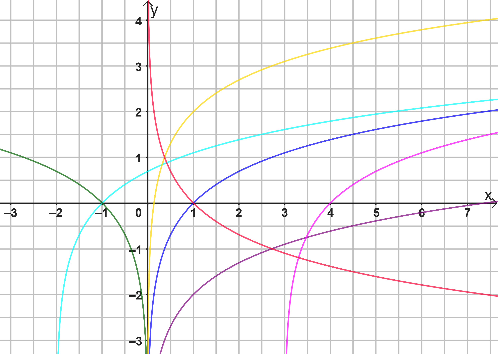

Mathematik 12. Klasse – Gymnasium Bayern
Ergänzen Sie die wesentlichen Eigenschaften der Funktion \( f(x) = \ln(x) \):
| Eigenschaft | Ihre Antwort |
|---|---|
| Definitionsmenge \( D_f \) |
Tipp: Überlege, für welche x-Werte der Logarithmus definiert ist.
|
| Wertemenge \( W_f \) |
Tipp: Schau dir an, welche y-Werte der Graph im Unendlichen und nahe der Null erreicht.
|
| Nullstellen |
Tipp: Wo überquert der Graph die x-Achse?
|
| Symmetrie |
Tipp: Überprüfe, ob eine Spiegelung an einer Achse oder dem Punkt (0|0) vorliegt.
|
| Monotonie |
Tipp: Steigt oder fällt der Graph dauerhaft?
|
| Schnittpunkt y-Achse |
Tipp: Berührt der Graph jemals die vertikale Achse?
|
Ordnen Sie den Funktionstermen die entsprechende Farbe des Graphen aus der Abbildung zu.

| Funktionsterm | Graphfarbe wählen |
|---|---|
| \( f(x) = \ln(x) \) | |
| \( f(x) = \ln(x+2) \) | |
| \( f(x) = \ln(-x) \) | |
| \( f(x) = \ln(x)+2 \) | |
| \( f(x) = \ln(x)-2 \) | |
| \( f(x) = \ln(x-3) \) | |
| \( f(x) = -\ln(x) \) |
Für die natürliche Logarithmusfunktion \( f(x) = \ln(x) \) gilt: